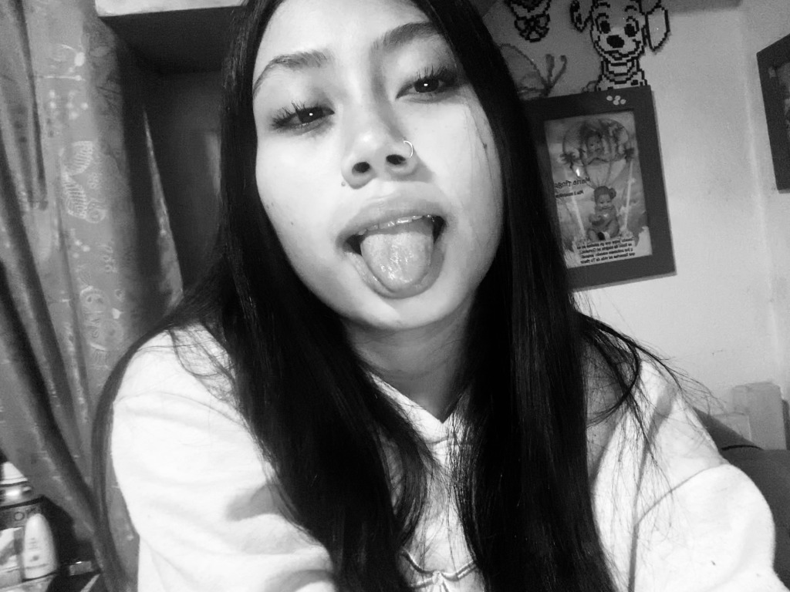
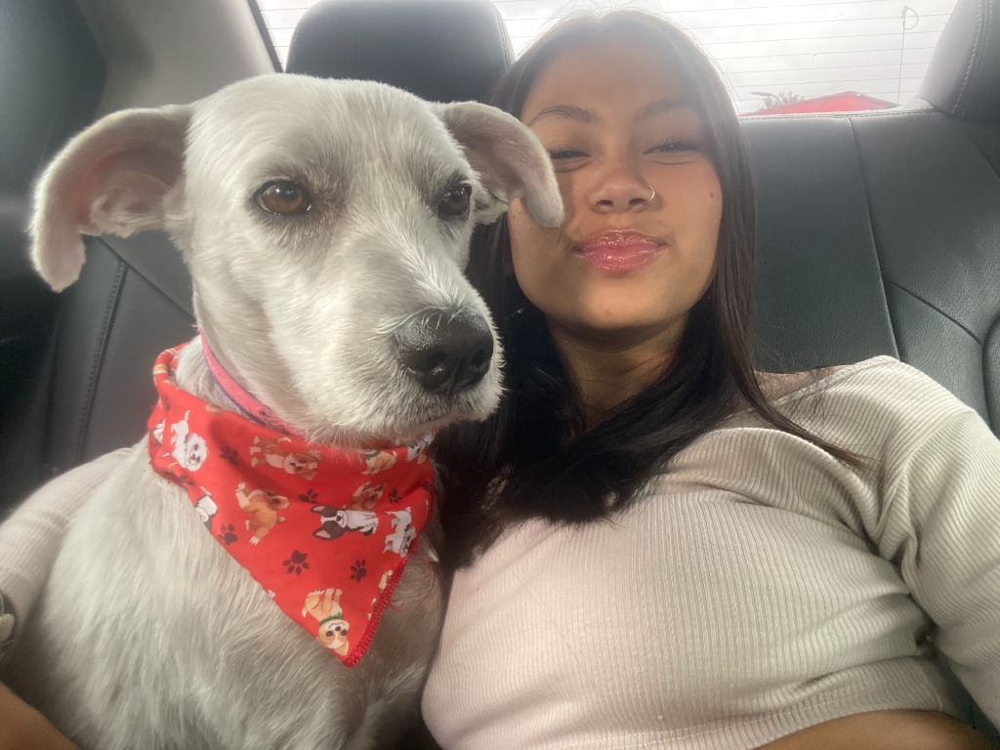
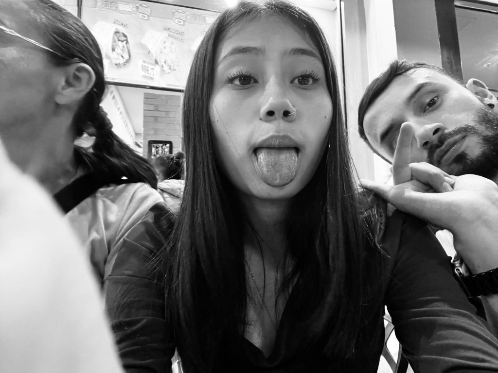
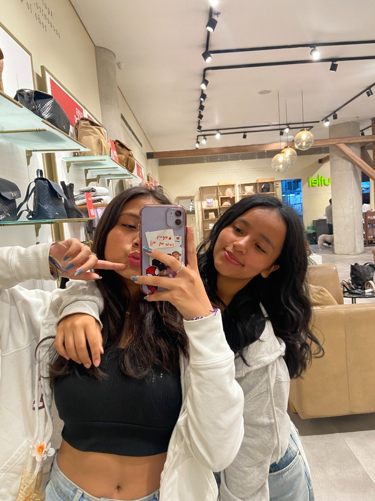
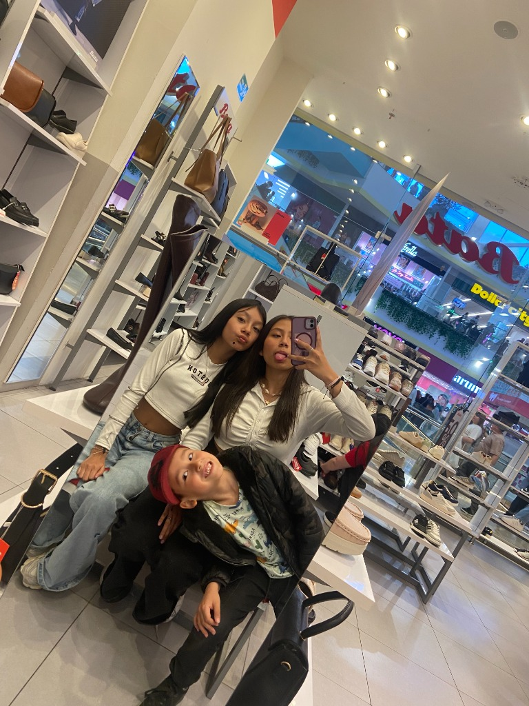
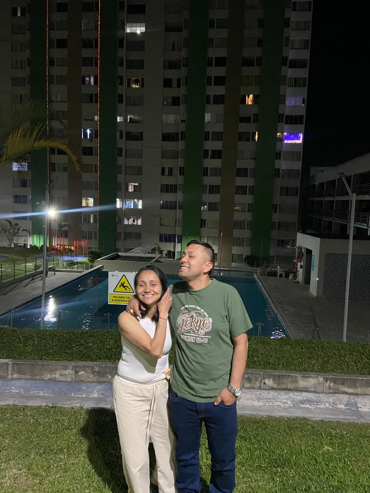
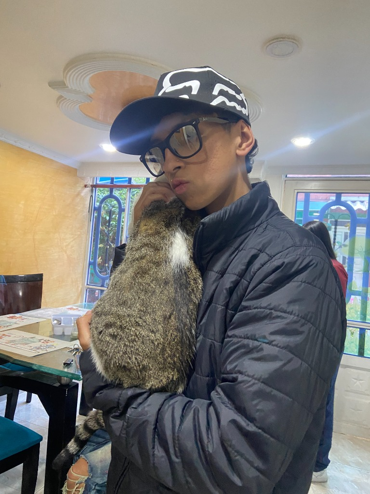

Soy Gabriela Jiménez. Estudio en el colegio María Currea Manrique en grado 11 y mi sueño es estudiar psicología. Te doy la bienvenida a mi rincón favorito en tonos lila y lavanda.

Los tres pilares esenciales de mi presente y de mis sueños para el futuro.
Auténtica, alegre y con un gran corazón para quienes me rodean.
Me considero una persona sencilla, de buen humor y muy leal. Disfruto los momentos de tranquilidad, las charlas sinceras y valorar a cada una de las personas importantes que forman parte de mi día a día.
Culminando mi último año escolar con los mejores recuerdos.
Actualmente curso grado once en el colegio María Currea Manrique. Es una etapa hermosa llena de metas, risas compartidas con amigos y la satisfacción de cerrar un gran ciclo para comenzar mi camino universitario.
Comprender las emociones y acompañar a otros con empatía.
Desde siempre me ha fascinado cómo funciona la mente humana, escuchar sin juzgar y brindar apoyo emocional. Siento una vocación profunda por la salud mental y quiero prepararme para ser una excelente profesional.
Las pequeñas cosas que hacen mis días felices... y lo que definitivamente no tolero.

Perritos, gatitos y cualquier peludito tienen mi corazón entero. Su ternura y fidelidad me llenan de paz y me sacan una sonrisa en cualquier momento.
¡Mi postre favorito en el mundo! Cualquier tarde mejora con una copa o un cono de helado refrescante. Probar sabores dulces y cremosos es un plan que nunca rechazo.
El bochorno y las temperaturas altas no van conmigo. Prefiero mil veces los días frescos, la lluvia suave, la ropa abrigada y una cobija calientita con una buena serie.
Conocer lugares nuevos, cambiar de ambiente, respirar aire fresco y crear recuerdos inolvidables con mi gente favorita recarga al 100% mi energía.
Un fin de semana perfecto siempre tiene palomitas de maíz y una buena maratón. Me atrapan las historias de confort, misterios bien construidos y tramas emotivas que dejan una enseñanza bonita.
Ver mis series y películas favoritasMis títulos favoritos para maratonear una y otra vez con una mantita y palomitas.
La máxima vibra de confort. Ideal para días fríos, tardes lluviosas y disfrutar de una taza caliente.
Amistad inquebrantable, misterios de los 80s y momentos de mucha emoción e intriga.
Una genialidad sobre la psicología humana, las emociones y la importancia de validar lo que sentimos.
Estética visual oscura, misteriosa y fascinante en tonos violetas y nocturnos.
Una protagonista soñadora, empática y resiliente que transforma su entorno con cariño.
Divertida, ágil e inteligente. Una chica que desafía cualquier límite con valentía.
Las personas y momentos que llenan mi vida de amor sincero, risas y compañía incondicional.

Mi Hermano"Complicidad, risas y un vínculo que dura para toda la vida."
Compartir momentos juntos, bromear, sacarnos fotos graciosas y saber que siempre contamos el uno con el otro. Tener a mi hermano a mi lado es tener un amigo leal en quien confiar siempre.

Amistades"Las amigas de verdad son el regalo más lindo que da la vida."
Las salidas de compras, los selfies en los espejos, las confidencias y los ataques de risa donde no podemos parar. La amistad sincera ilumina cualquier día y hace que cada salida sea inolvidable.

Amistades"Las memorias más divertidas se viven entre amigos."
Momentos espontáneos, poses graciosas y recuerdos de colegio que guardo con todo el cariño del mundo. La buena compañía hace que todo sea especial.

Familia"Mi mayor bendición y mi pilar seguro."
Gracias por su apoyo diario, por celebrar cada uno de mis pasos en grado 11 y animarme con amor a perseguir mi meta de estudiar psicología. Son mi hogar y mi mayor orgullo.
"Nobleza y ternura en cada mirada."
Mi compañero de paseos en carro, de tardes tranquilas y momentos de pura felicidad. Su pañuelito rojo y su mirada dulce alegran mi corazón todos los días.

Amor en Casa"El calor de un hogar lleno de amor por los animales."
Los abrazos a nuestros consentidos de cuatro patas demuestran el cariño tan especial que compartimos en familia. Momentos sencillos que valen todo.
"Tener a mi familia, a mi hermano, a mis verdaderas amistades y a mis peluditos es tener el tesoro más valioso del mundo."
Escribe una dedicatoria, deséame éxitos en grado 11 o recomienda una serie bonita.
¡Qué linda te quedó tu página, Gabi! Te quiero un montón y sé que te va a ir súper bien en tu grado 11 y como psicóloga.
Hace unos momentos